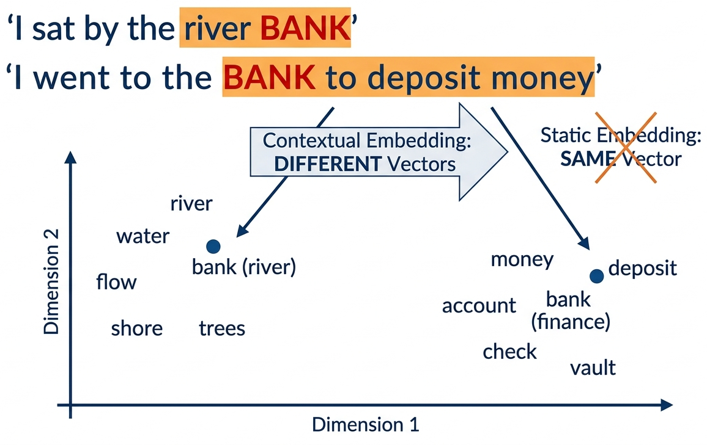
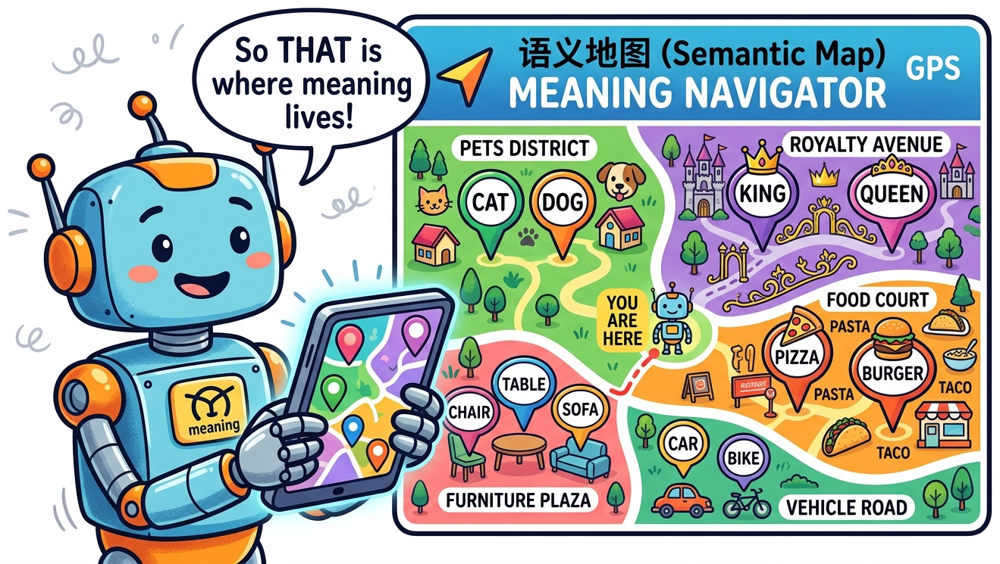

Prerequisites
This section assumes you understand static word embeddings (Word2Vec, GloVe) from Section 1.3 and their key limitation: one vector per word regardless of context. Familiarity with RNNs and LSTMs from Section 3.1 (or at least the concept of sequential processing) is helpful but not strictly required, as we review the relevant ideas here. The "pre-train then fine-tune" paradigm introduced in this section is a key bridge to the transformer architecture in Chapter 4.
The Polysemy Problem
Word2Vec, GloVe, and FastText share a fundamental limitation: each word gets exactly one vector, regardless of context. But language is deeply contextual.
Consider the word "bank":
- "I deposited money at the bank." → financial institution
- "We sat on the river bank." → edge of a river
- "Don't bank on it." → to rely on
With Word2Vec, all three uses map to the same vector: a compromise that captures none of the meanings well. This is called the polysemy problem.

Quick Check: Polysemy Spotting
How many different meanings does the word "run" have in these sentences? Would Word2Vec give them different or identical vectors?
- "I went for a run this morning." (exercise)
- "There was a run on the bank." (financial panic)
- "She has a run in her stockings." (tear in fabric)
- "The program takes a long time to run." (execute)
Reveal answer
Four completely different meanings, but Word2Vec assigns one single vector for all of them. That vector would be a blurry average of all four meanings, capturing none of them well. This is exactly the problem contextual embeddings solve.
ELMo: Embeddings from Language Models (2018)
ELMo was named after the Sesame Street character, continuing a proud NLP tradition of giving serious research papers whimsical names. Its successor, BERT, kept the theme going. Somewhere in a parallel universe, a model named "Oscar the Grouch" handles toxic text detection.
An LSTM (Long Short-Term Memory network, covered in Chapter 00) is a type of recurrent neural network designed to remember information over long sequences. Unlike a basic RNN, which struggles with vanishing gradients, an LSTM uses gating mechanisms (input, forget, and output gates) to selectively retain or discard information at each time step. This makes LSTMs well suited for processing sequential data like text.
ELMo (Peters et al., 2018) was the first widely successful contextual embedding model. The key idea: run the entire sentence through a deep bidirectional LSTM, and use the hidden states as word representations. Since the LSTM has seen the whole sentence, each word's representation is influenced by its context.
How it works:
- Train a bidirectional language model (forward LSTM + backward LSTM) on a large corpus
- For each word in a sentence, extract hidden states from all layers
- The ELMo embedding is a learned weighted combination of all layer representations
The breakthrough: "bank" in "river bank" now gets a different vector than "bank" in "bank account", because the LSTM hidden states are conditioned on the entire sentence.

Why Different Layers Capture Different Information
A remarkable finding from the ELMo paper: different layers of the LSTM capture different types of linguistic information:
- Layer 0 (token embeddings): Captures basic word identity and morphological features, similar to Word2Vec. "Running" is close to "runner" and "runs."
- Layer 1 (first LSTM): Captures syntactic information: part of speech, grammatical role. The model has learned whether a word is a noun, verb, or adjective from context.
- Layer 2 (second LSTM): Captures semantic information: word sense disambiguation, topical context. This is the layer that distinguishes "river bank" from "bank account."
Consider the word "bank" in the sentence "She walked along the river bank."
- Layer 0 recognizes "bank" as a familiar token, placing it near other common nouns.
- Layer 1 identifies that "bank" functions as a noun in this sentence (not a verb as in "bank the shot"), based on its syntactic position after "river."
- Layer 2 disambiguates the meaning: because the surrounding context includes "river" and "walked along," this layer shifts the representation toward the geographic feature sense, away from the financial institution sense.
Each layer refines the representation, moving from raw identity to grammatical role to contextual meaning.
This is why ELMo uses a weighted combination of all layers (the α weights in the diagram above): different downstream tasks benefit from different layers. A POS tagger might weight Layer 1 heavily, while a sentiment classifier might rely more on Layer 2. The weights are learned during fine-tuning for each specific task.
ELMo improved the state of the art on every single NLP benchmark it was tested on: question answering, sentiment analysis, NER, coreference resolution, and more. The gains were typically 3 to 10% absolute improvement, which was enormous by the standards of 2018. This proved definitively that contextual representations were the future, and set the stage for BERT just six months later.
ELMo introduced what would become the dominant paradigm in NLP: pre-train a model on a large unlabeled corpus (learning general language understanding), then fine-tune or use the representations for specific tasks. This is exactly what BERT, GPT, and all modern LLMs do, just at a much larger scale.
Contextual Embeddings in Code
While ELMo itself is rarely used directly today (BERT and transformers have superseded it), we can demonstrate the concept of contextual embeddings using Hugging Face Transformers, which makes it easy to extract hidden states from any model: Code Fragment 1 below puts this into practice.
# Demonstrating contextual embeddings: same word, different vectors from transformers import AutoTokenizer, AutoModel import torch from scipy.spatial.distance import cosine # Load a BERT model (the modern successor to ELMo) # NOTE: First run will download bert-base-uncased (~420 MB). tokenizer = AutoTokenizer.from_pretrained("bert-base-uncased") model = AutoModel.from_pretrained("bert-base-uncased") def get_word_embedding(sentence, word): """Extract the contextual embedding for a specific word in a sentence.""" inputs = tokenizer(sentence, return_tensors="pt") with torch.no_grad(): outputs = model(**inputs) # Find the token position for our word # WARNING: This assumes the target word is a single token. If BERT's tokenizer # splits the word into subwords (e.g., "deposit" -> "dep" + "##osit"), this # lookup will fail. For production code, you would need to handle multi-token # words by averaging their subword embeddings. tokens = tokenizer.tokenize(sentence) word_idx = tokens.index(word) + 1 # +1 for [CLS] token # Return the hidden state at that position return outputs.last_hidden_state[0, word_idx].numpy() # "bank" in two different contexts bank_river = get_word_embedding("I sat by the river bank", "bank") bank_money = get_word_embedding("I went to the bank to deposit money", "bank") # Measure how different the two "bank" vectors are distance = cosine(bank_river, bank_money) print(f"Cosine distance between 'bank' in different contexts: {distance:.3f}") # Output: ~0.35: substantially different vectors for the same word! # Compare: "bank" (river) is closer to "shore" than to "bank" (money) shore = get_word_embedding("We walked along the shore", "shore") print(f"Distance bank(river) to shore: {cosine(bank_river, shore):.3f}") print(f"Distance bank(river) to bank(money): {cosine(bank_river, bank_money):.3f}") # bank(river) is CLOSER to "shore" than to bank(money)! # This is exactly what contextual embeddings solve.
ELMo (2018) proved the concept, but BERT (2018, released just months later) does the same thing better and faster using transformers instead of LSTMs. Both produce contextual embeddings; the code above works identically with either. We use BERT here because it is readily available via Hugging Face and is the tool you would actually use in practice. The concept (same word gets different vectors in different contexts) is ELMo's contribution; the implementation is modern.
Contextual Embeddings Fix a Medical NER System
Who: NLP team at a health-tech startup building a named entity recognition (NER) system to extract drug names, conditions, and procedures from clinical notes
Situation: The initial system used GloVe embeddings (300-dimensional, trained on Wikipedia) as input features for a BiLSTM-CRF tagger. It achieved 79% F1 on a labeled test set of 3,000 clinical notes.
Problem: The system consistently failed on ambiguous medical terms. "Discharge" could mean a patient leaving the hospital or fluid leaving a wound. "Culture" could mean a lab test or a patient's background. GloVe gave each word a single vector regardless of context, causing the tagger to misclassify these terms roughly 40% of the time.
Dilemma: The team considered building hand-crafted disambiguation rules (brittle, incomplete), training domain-specific GloVe on medical text (would not solve the fundamental polysemy issue), or replacing GloVe with contextual embeddings from a pre-trained model.
Decision: They replaced GloVe inputs with contextual embeddings from BioBERT (a BERT model pre-trained on PubMed articles), feeding BioBERT's hidden states into the same BiLSTM-CRF architecture.
How: Extracted the last hidden layer from BioBERT for each token, then used these 768-dimensional vectors as input features. The rest of the pipeline remained identical.
Result: F1 jumped from 79% to 89.4%. Accuracy on ambiguous terms specifically improved from 60% to 87%. The model correctly distinguished "discharge" (procedure) from "discharge" (event) based on surrounding clinical context.
Lesson: Contextual embeddings are not a marginal improvement over static embeddings; they are transformative for tasks involving polysemy. In domains where the same word carries different meanings in different contexts (medicine, law, finance), the switch from static to contextual representations is the single highest-impact change you can make.
From ELMo to Transformers: What Changed
Let us compare the approaches side by side to see the progression clearly:
| Property | Word2Vec / GloVe | ELMo | BERT / GPT (next chapters) |
|---|---|---|---|
| Context-aware? | No (static) | Yes (bi-LSTM) | Yes (self-attention) |
| Pre-trained? | Yes | Yes | Yes (much larger scale) |
| Architecture | Shallow network | Deep bi-LSTM | Transformer |
| Approx. parameters | ~300K to 3M (embedding table only) | ~93M | ~110M (BERT-base) to 175B (GPT-3) |
| Handles polysemy? | No | Yes | Yes (better) |
| Parallelizable? | N/A | No (sequential) | Yes (all at once!) |
| Long-range context? | Window only | Limited by LSTM memory | Full sequence via attention |
The key limitation of ELMo was its reliance on LSTMs, which process text sequentially (one word at a time). This made training slow and limited the model's ability to capture very long-range dependencies. The Transformer architecture (Chapter 4) solves this by processing all words simultaneously using self-attention.
Choosing the Right Layer for Feature Extraction
Who: Applied ML researcher at an academic institution building a part-of-speech tagger for low-resource African languages
Situation: Using multilingual BERT (mBERT) to extract features for POS tagging in Yoruba. The researcher needed to decide which of the 12 transformer layers to use as input features for the downstream CRF tagger.
Problem: Using only the final layer (layer 12) gave 74% accuracy, which was disappointing given that English POS tagging with the same setup reached 97%.
Dilemma: The options were to fine-tune the entire mBERT model (expensive, risk of catastrophic forgetting on 500 labeled sentences), use a fixed layer (which one?), or use a learned weighted combination of all layers (the ELMo approach).
Decision: Following the ELMo insight that lower layers encode syntax while upper layers encode semantics, they tested individual layers and found that layers 6 through 8 performed best for POS tagging. They then used the ELMo-style weighted sum across all 12 layers, letting the model learn the optimal mixture.
How: Extracted hidden states from all 12 layers, introduced 12 learnable scalar weights (initialized uniformly), and computed the weighted sum as the input representation. Only these 12 weights and the CRF layer were trained.
Result: Accuracy improved from 74% (last layer only) to 82% (weighted combination). The learned weights confirmed that middle layers (6 through 9) received the highest weights, consistent with the syntactic-layer hypothesis from ELMo.
Lesson: The final layer of a pre-trained model is not always the best feature for every task. Syntactic tasks benefit from middle layers; semantic tasks benefit from upper layers. When in doubt, use a learned weighted combination across all layers.
Summary: The Representation Journey
This module traced the evolution of how we represent text for machines. Each step solved a problem that the previous approach could not handle:
The entire history of NLP can be read as a quest for better representations of meaning. Each breakthrough, from TF-IDF to Word2Vec to ELMo to Transformers, made the representation denser (fewer dimensions, more information per number), more contextual (same word, different meaning in different contexts), and more general (works across tasks without task-specific engineering). Understanding this trajectory is the key to understanding where the field is heading next.

What is Next
In Chapter 2, we will explore tokenization, the critical first step that determines how text is broken into pieces before being fed to any model. You will learn the BPE algorithm that powers GPT-4 and Llama, and understand why tokenizer choice affects everything from model quality to API cost.
In Chapter 3, we will dive deep into attention, the mechanism that solved the sequential bottleneck of RNNs and enabled the Transformer revolution.
And in Chapter 4, we will build a complete Transformer from scratch in PyTorch, the architecture that underpins every model we will work with for the rest of the book.
What You Built in This Chapter
- A text preprocessing pipeline in both NLTK and spaCy
- Bag-of-Words and TF-IDF vectorizers with sklearn
- A Word2Vec model trained from scratch with Gensim
- Cosine similarity computations and word analogy queries
- A FastText model that handles out-of-vocabulary words
- GloVe vectors loaded and compared with Word2Vec
- A similarity heatmap and t-SNE visualization
- Contextual embeddings extracted from BERT, proving that "bank" gets different vectors in different contexts
You now have hands-on experience with every major text representation technique from the past 30 years. Not bad for one chapter.
Exercises & Self-Check Questions
How to use these exercises: The conceptual questions test your understanding of the why behind each technique. Try answering them in your own words before moving on. The coding exercises are hands-on challenges you should run in a Jupyter notebook.
Conceptual Questions
- Representation evolution: In your own words, explain why the transition from sparse vectors (BoW) to dense vectors (Word2Vec) was such a big deal. What specific problems did it solve, and what new capabilities did it unlock?
- The distributional hypothesis: The phrase "you shall know a word by the company it keeps" is the foundation of Word2Vec. Can you think of cases where this assumption breaks down? (Hint: think about antonyms. "Hot" and "cold" appear in very similar contexts...)
- Static vs. contextual: Give three sentences where the word "play" means different things. Explain why Word2Vec would struggle with these but ELMo would handle them well.
- Why pre-train? ELMo was pre-trained on a large corpus, then used for specific tasks. Why is this better than training a model from scratch for each task? What does the pre-training capture that task-specific training would miss?
- Trade-offs: A colleague argues "TF-IDF is obsolete; just use embeddings for everything." Give two scenarios where TF-IDF would actually be the better choice, and explain why.
Coding Exercises
- Preprocessing exploration: Take a paragraph from a news article. Run it through the preprocessing pipeline from Section 1.2. Then experiment: what happens if you do not remove stop words? What if you use stemming instead of lemmatization? How do the resulting BoW vectors differ?
- Analogy hunting: Using the pre-trained
word2vec-google-news-300vectors, find 5 analogies that work well (beyond king/queen) and 3 that fail. Can you explain why the failures happen? - Similarity exploration: Pick 20 words from three different categories (e.g., sports, food, technology). Compute all pairwise cosine similarities. Do words within a category have higher similarity than cross-category pairs? Visualize the similarity matrix as a heatmap.
- Word2Vec from scratch (challenge): Implement the Skip-gram model with negative
sampling in pure PyTorch (no Gensim). Train it on a small text corpus and verify that similar words
end up with similar vectors. Compare your results with Gensim's output.
Scaffolding hint: Your implementation will need four key components: (1) aSkipGramDatasetclass that generates (center, context, negative) tuples from your corpus; (2) twonn.Embeddinglayers, one for center words and one for context words; (3) a negative sampling loss function that maximizes the dot product for positive pairs and minimizes it for negative pairs (see the formula in Section 1.3); and (4) a training loop that iterates over batches, computes the loss, and callsoptimizer.step(). Start with a small vocabulary (a few hundred words) and short embedding dimension (50) to debug before scaling up.
Further Reading
| Topic | Paper / Resource | Why Read It |
|---|---|---|
| Word2Vec | Mikolov et al., "Efficient Estimation of Word Representations in Vector Space" (2013) | The original paper. Surprisingly short and readable. |
| GloVe | Pennington et al., "GloVe: Global Vectors for Word Representation" (2014) | Elegant math showing why co-occurrence ratios encode meaning. |
| FastText | Bojanowski et al., "Enriching Word Vectors with Subword Information" (2017) | The subword approach that later influenced BPE tokenizers. |
| ELMo | Peters et al., "Deep contextualized word representations" (2018) | The paper that proved contextual embeddings work on every task. |
| Word2Vec explained | Jay Alammar, "The Illustrated Word2Vec" | The best visual explanation of Word2Vec on the internet. |
| Embeddings theory | Levy & Goldberg, "Neural Word Embedding as Implicit Matrix Factorization" (2014) | The mathematical connection between Word2Vec and GloVe. |